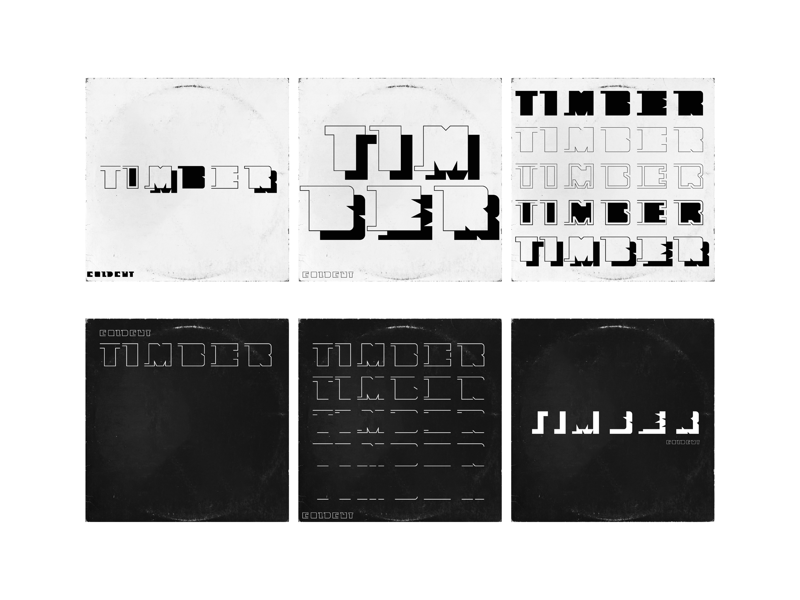
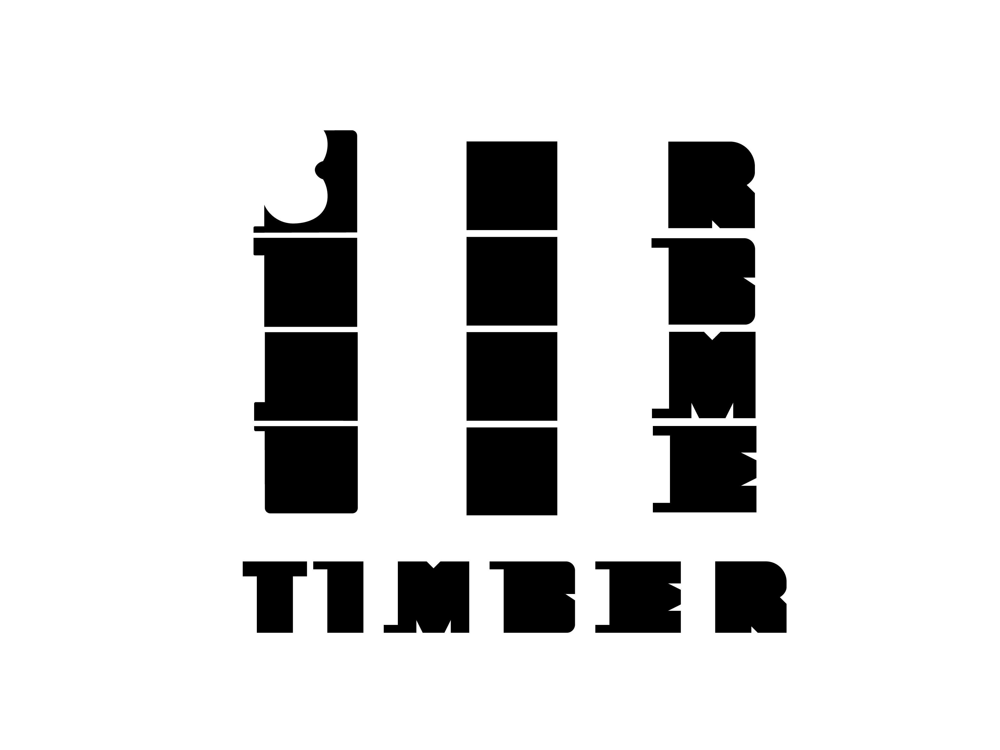
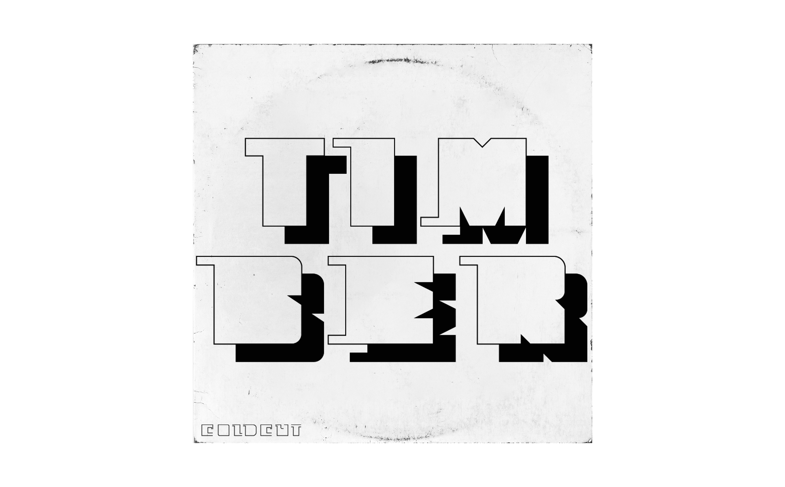

Projects
About me
TIMBER
Timber by Coldcut, released in 1998, is a musical protest against the destruction of tropical rainforests. The accompanying video by Hexstatic blends the rhythmic growl of chainsaws, splintering wood, and bark beetles with precisely cut imagery.
This fusion of sound and devastation became the basis of my design. My typeface consists of squares from which shapes have been carved—like axe strokes cutting into wood. It feels raw, echoing the relentless act of felling.



Illustrator FontDesign
Martin Woodtli
Mauro Paolozzi
2024